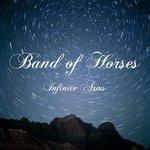
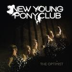
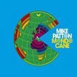

Music Reviews
-

Band of Horses Infinite Arms
Infinite Arms suffers rather heavily from diminishing returns.
Luke Winkie reconsiders his flannel collection -
High Places High Places VS Mankind
High Places VS Mankind, while likely not titled as a rebuke toward their divided fanbase, again faces the task of assembling a full-length capable of matching the high watermark set by their too-good-too-soon singles compilation.
Ryan Pratt reviews... -

Untied States Instant Everything, Constant Nothing
Instant familiarity. Constant something.
Sean Caldwell reviews... -

The Hold Steady Heaven Is Whenever
They've still got it, even if this is their first album that feels like a vehicle for singles.
Ryan Faughnder reviews... -
Ceremony Rocket Fire
Ceremony, a shoegaze act closely associated with the noisy A Place To Bury Strangers, let loose an album full of blistering noise pop.
Andrew Baer likes volume... -

New Young Pony Club The Optimist
New Young Pony Club: they're good, and they kind of sound like they don't like you.
Jackson White is slowly learning a thing or two about music -

Tracey Thorn Love and Its Opposite
Former Everything But The Girl vocalist, Tracey Thorn, gets personal on her latest LP, Love and Its Opposite
Joe Rivers reviews... -

Broken Social Scene Forgiveness Rock Record
Broken Social Scene have returned with their long awaited fourth album. Its more than good but less than fantastic. What does that mean? Find out here and only here.
Andrew Baer reviews... -
Phosphorescent Here's To Taking It Easy
Talented? Yes. Aesthetically pleasing? Yes. Groundbreaking? Though Phosphorescent's made a good album, they are still far from the big G.
Jackson White wants to live vicariously through music... -

Mike Patton Mondo Cane
Mike Patton employs an orchestra and brings that Italian beat back.
Sean Caldwell swoons...